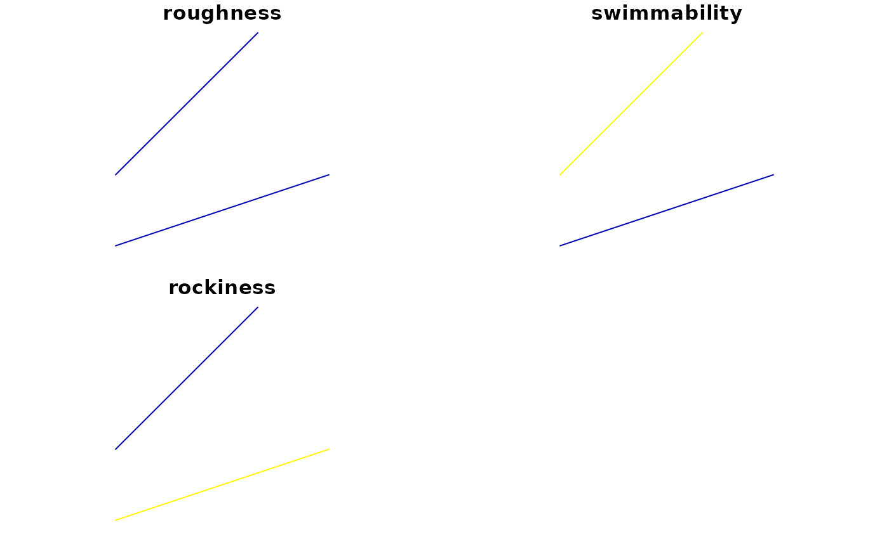

Create channel cross sections object
xt_sxc.RdChannel cross sections are a lightweight wrapper on sf geometries
(sfc objects), specifically a collection of line segments. This means
that you can use functions from sf to manipulate these objects whenever
special cross section methods do not exist.
Arguments
- x
Object to create cross sections out of. Can be a vector of (positive) widths if the spatial orientation is not important; can be line segments created using the sf package.
- ...
Optional arguments passed to
sf::st_sfc()relating to the geometrical properties of the cross sections, such ascrs.
Value
A channel cross section object, with class "sxc", which is a subclass of sf's "sfc_LINESTRING" class. The nomenclature is inspired by the sf package, so that "sxc" stands for "spatial cross-section column".
Examples
# Create cross sections without worrying about spatial orientation.
(a <- xt_sxc(1:3))
#> Simple cross section collection with 3 cross sections
#> Geometry set for 3 features
#> Geometry type:
#> Dimension: XY
#> Bounding box: xmin: 0 ymin: 1 xmax: 3 ymax: 3
#> CRS: NA
#> LINESTRING (0 1, 1 1)
#> LINESTRING (0 2, 2 2)
#> LINESTRING (0 3, 3 3)
print(a)
#> Simple cross section collection with 3 cross sections
#> Geometry set for 3 features
#> Geometry type:
#> Dimension: XY
#> Bounding box: xmin: 0 ymin: 1 xmax: 3 ymax: 3
#> CRS: NA
#> LINESTRING (0 1, 1 1)
#> LINESTRING (0 2, 2 2)
#> LINESTRING (0 3, 3 3)
# Create cross sections from sf line segments, this time with a
# coordinate reference system. Note that even though we input a
# multilinestring, sxchan parses it into linestrings, so that each
# cross section is a linestring.
library(sf)
seg <- st_multilinestring(list(
matrix(c(0, 1, 0, 1), ncol = 2),
matrix(c(0, 1.5, -0.5, 0), ncol = 2)
))
b <- xt_sxc(seg, crs = 3005)
plot(b)
# Because these objects are just sxc objects from the sf package,
# we can manipulate them with sf.
# - Subset to grab individual cross section line segments:
b[[1]]
#> LINESTRING (0 0, 1 1)
b[[2]]
#> LINESTRING (0 -0.5, 1.5 0)
# - Add arbitrary features to the cross sections.
(b2 <- st_sf(b, roughness = 0.1, swimmability = c(4, 2)))
#> Simple cross section collection with 2 cross sections
#> Simple feature collection with 2 features and 2 fields
#> Geometry type:
#> Dimension: XY
#> Bounding box: xmin: 0 ymin: -0.5 xmax: 1.5 ymax: 1
#> Projected CRS: NAD83 / BC Albers
#> roughness swimmability b
#> 1 0.1 4 LINESTRING (0 0, 1 1)
#> 2 0.1 2 LINESTRING (0 -0.5, 1.5 0)
# - Want to add / change more columns / features? It's just a data frame:
b2$rockiness <- c(1, 1.1)
b2
#> Simple cross section collection with 2 cross sections
#> Simple feature collection with 2 features and 3 fields
#> Geometry type:
#> Dimension: XY
#> Bounding box: xmin: 0 ymin: -0.5 xmax: 1.5 ymax: 1
#> Projected CRS: NAD83 / BC Albers
#> roughness swimmability b rockiness
#> 1 0.1 4 LINESTRING (0 0, 1 1) 1.0
#> 2 0.1 2 LINESTRING (0 -0.5, 1.5 0) 1.1
plot(b2)

# - The geometry column is still a cross section object
st_geometry(b2)
#> Simple cross section collection with 2 cross sections
#> Geometry set for 2 features
#> Geometry type:
#> Dimension: XY
#> Bounding box: xmin: 0 ymin: -0.5 xmax: 1.5 ymax: 1
#> Projected CRS: NAD83 / BC Albers
#> LINESTRING (0 0, 1 1)
#> LINESTRING (0 -0.5, 1.5 0)